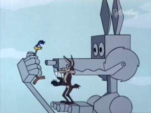

Sobre la inteligencia del coyote
Las leyes de la “Coyótica” (Parte I)
1) El Correcamino no puede dañar al Coyote, excepto de modo indirecto
al hacer bip, bip.
2) Ninguna fuerza externa puede dañar al Coyote, excepto su propia
ineptitud o la falla de algún producto Acme. Los trenes y camiones son
excepciones de vez en cuando.
3) El coyote puede parar en cualquier momento, si es que no fuera un
fanático.
(Repita “un fanático es alguien que redobla sus esfuerzos cuando ha
olvidado su objetivo” – George
Santayana)

Caninus Nervous Rex
Software Marca ACME
Esta es una definición interesante:
“El software es inteligencia empaquetada.”
Otros definen inteligencia como “la capacidad para elaborar respuestas a problemas difíciles”.
Por ejemplo, en algún momento teníamos el problema de almacenar grandes cantidades de datos y poder recuperarlos en forma rápida y eficiente. Con el tiempo se desarrollaron las bases de datos, y posteriormente las bases de datos relacionales. Hubo empresas que empaquetaron la solución a este problema en forma de una pieza de software, conocida como sistema administrador de bases de datos, y cobraron dinero por este producto. Mientras más compleja la solución, mayor el precio, después de todo se invirtieron muchas horas de investigación y desarrollo para construir ese sistema informático. Lo que estabas comprando era inteligencia empaquetada.
Esta visión es interesante, y muy importante porque es la base de la riqueza de grandes corporaciones como Microsoft u Oracle. Lo que estas empresas venden como producto es la solución empaquetada a un problema, y siguiendo las definiciones de arriba lo que venden es inteligencia empaquetada.
El problema es que esta visión choca con la llamada “paradoja de la inteligencia”.
Las leyes de la “Coyótica” (Parte II)
- No hay diálogos, nunca, excepto “bip-bip” y aullidos de dolor.
- El Correcaminos debe permanecer en el camino – simplemente porque es un corre caminos.
- Toda la acción debe estar confinada al ambiente natural de los dos personajes, el desierto del sur oeste norteamericano.
- Todas las herramientas, armas, o aparatos mecánicos deben ser obtenidos de la Acme Corporation.
La Paradoja de la Inteligencia
En un interesante artículo1 el sicólogo y neurocientífico inglés Richard Gregory plantea la siguiente paradoja:
“Se dice que la gente es más inteligente cuando encuentra una respuesta a algo que cuando ya lo sabía de antemano (lo cual es una especie de trampa); sin embargo, también decimos que los eruditos que saben mucho son más inteligentes que los ignorantes. Esta paradoja puede resolverse señalando que llegar a ser un erudito requiere inteligencia – puesto que aprender es difícil. Pero la verdad es que hablamos del conocimiento mismo como si fuera un tipo de inteligencia. Cuando Macbeth pregunta”¿Dime a qué debes esta rara inteligencia?", está preguntando por la fuente del conocimiento o de la información. Esto tiene el mismo significado que la expresión “inteligencia militar”, que no implica que los militares sean especialmente brillantes. Por otra parte, si decimos que Einstein era inteligente, nos referimos a lo que inventó o descubrió, en vez de a lo que aprendió en el colegio o en su vida posterior. Debido a que lo que dijo no era todavía conocido es por lo que consideramos a Einstein – y a Newton, Faraday, Darwin y otros grandes innovadores– como excepcionalmente inteligentes. Esta no es la “inteligencia” del conocimiento existente. Se trata de la “inteligencia” del descubrimiento o la creación de nuevo conocimiento."
“Por lo tanto encontramos dos clases de inteligencia muy diferentes: la inteligencia del conocimiento almacenado y la inteligencia del procesamiento, aplicada a la solución de problemas. Sugiero que sería útil denominarlas “inteligencia potencial” e “inteligencia cinética”. Aunque corresponde a conceptos distintos, estas dos inteligencias se encuentran entremezcladas, puesto que para resolver problemas se necesitan algunos conocimientos y, para aplicar el conocimiento adecuadamente, se precisa de cierta iniciativa.”
La propuesta de Gregory pretende establecer una analogía con los términos de Energía Potencial y Energía Cinética que se usan en la Física.
Las Leyes de la Coyótica (Parte III)
- Siempre que sea posible haga de la gravedad el peor enemigo del Coyote
Analogías, Analogías
Si recuerdan las viejas caricaturas del Corre Caminos, recordarán que el pobre Coyote levantaba una enorme piedra lo más alto posible, con el fin de aplastar al Corre Caminos. Al hacer esto la roca acumulaba energía potencial, de modo que al soltarla esa energía potencial se convertiría en energía cinética con la suficiente fuerza para aplastar al odioso plumífero (lo que confirma mis sospechas de que, finalmente, el Coyote no quería realmente comer al pajarraco aquel, sino que simplemente lo odiaba).

Acumulando energia potencial
De una manera más formal, la energía potencial2 es la capacidad de ejecutar trabajo que tiene un sistema en función de su posición o configuración. Es la energía almacenada por el sistema, es su capacidad de trabajo. Por otro lado la energía cinética es la energía que posee un objeto debido a su movimiento. En el diagrama de abajo vemos que la energía potencial que acumula una piedra, debida a su posición se transforma totalmente en energía cinética al rodar.

Este émulo de Sisifo nos muestra los conceptos de Energia Potencial y Cinetica
Siguiendo la analogía de Richard Gregory, cuando resolvemos un problema estamos aplicando inteligencia cinética, si la solución al problema la almacenamos de algún modo, lo que hemos hecho es convertirla en inteligencia potencial.
La inteligencia potencial no sólo está en nuestras mentes, está en nuestros libros y herramientas. Las herramientas contienen soluciones a problemas prácticos. Consideremos por ejemplo las tijeras, estas corresponden a la solución del problema de cómo cortar tela.
“Las tijeras se desarrollaron a través de muchas generaciones por medio de distintos pasos de inteligencia cinética que resuelve problemas, produciendo así la inteligencia potencial que está incorporada en su diseño actual.”
Esta analogía entre inteligencias y energías parece bastante buena y útil. Pero no es totalmente correcta. Cuando el peso de la piedra es liberado la energía potencial se pierde. ¿Qué pasa con el conocimiento cuando se usa? ¿Se pierde la inteligencia potencial de las tijeras cuando cortan tela?
En general esto no sucede, una herramienta no pierde su inteligencia potencial, salvo cuando se desgasta. En el caso del software, que es un tipo de herramienta, este desgaste es aún menor. La inteligencia militar pierde su razón de ser cuando es de conocimiento general, puesto que esta inteligencia debe permanecer secreta para el enemigo si ha de ser útil. Por otro lado, la ciencia obtiene su poder del conocimiento compartido. La inteligencia potencial secreta es la única que se desgasta como la energía potencial.La inteligencia potencial no se desgasta salvo cuando hay competencia.
Las Leyes de la Coyótica (Parte IV)
- El Coyote es siempre más humillado que dañado por sus fallas.
- La simpatía de la audiencia debe permanecer con el Coyote.
- No le está permitido al Coyote atrapar al Corre Caminos.
Sobre La Inteligencia del Coyote
El Coyote3 tiene a su disposición los recursos de la corporación más importante del mundo, la famosa Acme Corporation, que cuenta con una logística extraordinaria capaz de hacer llegar al desierto más alejado cualquier tipo de artefacto que el Coyote quiera comprar.
Sin embargo, a pesar de toda la capacidad, de toda la inteligencia empaquetada de la que dispone, el Coyote es un inepto, un incompetente. Y no es que carezca de inteligencia cinética, el problema es que está mal enfocado. Está tan obsesionado en su tarea que ha olvidado su objetivo. Es un fanático, y ese es su defecto.
(Repita “un fanático es alguien que redobla sus esfuerzos cuando ha olvidado su objetivo” – George Santayana)
“La necesidad de inteligencia cinética se minimiza cuando el conocimiento es compartido de manera cooperativa”.
Uno de los problemas que enfrentamos en TI, sobretodo en ambientes corporativos, es la incapacidad de administración de la inteligencia potencial y cinética.
“A nadie han despedido por usar IBM”, dice un viejo refrán en el mundo corporativo TI. Lo que quiere decir esta frase es que los decisores prefieren comprar soluciones empaquetadas de grandes marcas, porque eso “les da garantías”. Si algo falla podemos cobrar nuestra garantía, soporte, o lo que sea. Entonces se invierten grandes sumas en licencias, contratos de soporte, renovaciones de licencias, etc. Eso es operar como el Coyote: para solucionar el problema compro productos Acme, y gasto grandes sumas de dinero en protegerme ante las eventuales fallas del software.

Eso puede haber sido cierto hace muchos años atrás, cuando el conocimiento realmente estaba empaquetado, y nadie más que Acme tenía la fórmula para construir complejos robots atrapa Corre Caminos.
Pero hoy muchos de los paquetes básicos son casi commodities: Sistemas Operativos, Bases de Datos, Lenguajes de Programación, Paquetes de Ofimática, etc.
Tenemos Software de fuente abierta, software libre, que contiene miles de horas de inteligencia potencial acumulada. El conocimiento para resolver problemas está siendo almacenado en repositorios como GitHub o Stack Exchange.
El mundo ha cambiado, el ejecutivo TI no es el administrador de la infraestructura y el gran custodio de las metodologías de desarrollo. El ejecutivo TI moderno es el administrador de la inteligencia, no de la inteligencia empaquetada, es el que administra los dos tipos de inteligencia que hemos discutido, la inteligencia potencial, a cargo de los equipos de seguridad e infraestructura y la cinética a cargo de las áreas de desarrollo. Se debería gastar más recursos en lo que aporta más valor, y esa es el área de desarrollo. Sobre esto voy a volver más adelante en otro post.
El problema, creo yo, es que muchos ejecutivos TI han perdido su objetivo, se han vuelto fanáticos: de la seguridad, del orden, de la metodología, han olvidado para que están.
Hay una caricatura en que el Coyote finalmente atrapa al Corre Caminos, y adivinen que pasa...

Ahora que? La pregunta del fanatico, que ha olvidado su objetivo
-
What Is Intelligence (Darwin College Lectures), Jean Kalfa (editor),Richard Gregory, Roger Penrose, Daniel Dennett, et al. Los textos corresponde al capítulo 1: “La inteligencia y la vista”, tomados de la traducción de Paloma Gómez Cresp, Editorial Alianza, Madrid 1995. ↩︎
-
El diagrama de energía potencial y cinética fue obtenido de aquí. ↩︎
-
Las Leyes de la Coyótica es el nombre que le he dado a las 11 leyes que elaboraron Chuck Jones y los artistas que trabajaron en las caricaturas originales del Correcaminos. Pueden leer más sobre esta caricatura en esta entrada de Wikipedia. ↩︎